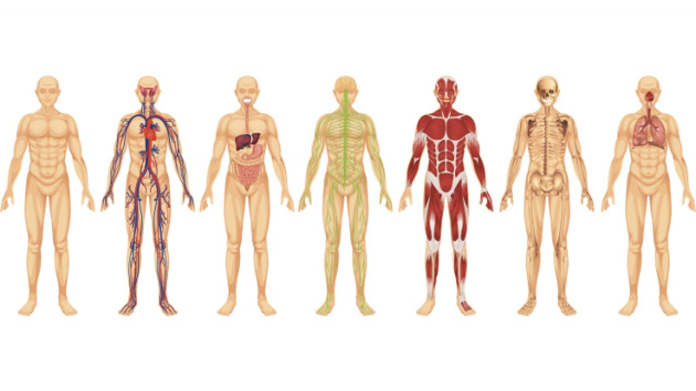
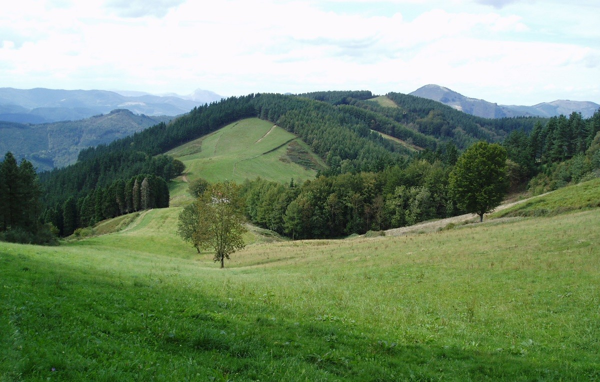

EP5º El cuerpo humano
4 de Diciembre de 2019

Los alumnos de 5º de primaria han realizado un proyecto muy interesante y divertido para desarrollar el tema de El cuerpo humano y salud. Para comenzar, en grupos han preparado una “mochilas” explicativas de los cuatro aparatos (digestivo, respiratorio, circulatorio y excretor) para más tarde presentárselas a sus compañeros. Después de esto, han estudiado los huesos y los músculos con ayuda de unos puzles y han trabajado los 5 sentidos de manera práctica. Para terminar han realizado el repaso del tema de manera lúdica con un Trivial temático. Hemos aprendido un montón pasándonoslo fenomenal.
Proyecto Udazkena
1 de Diciembre de 2019

Hace dos semanas empezamos con el proyecto “Udazkena”. Lo hemos desarrollado en diferentes asignaturas y gracias a ello hemos conseguido un bonito trabajo.
Por un lado, en la asignatura de Plástica aprendimos a secar las hojas para más tarde pintarlas a nuestro gusto. Para terminar, hemos hecho un gran mural entre las dos clases de quinto de primaria.
Por otro lado, en la asignatura de Lengua Castellana preparamos una ficha de una planta o árbol en donde aprendieron las diferentes partes de las que debe estar compuesta dicha ficha. Además, desde la asignatura de Gaitasun Digitala buscaron la información sobre su planta o árbol y también aprendieron a desarrollarla en un documento Word.
¡Ha estado genial! ¡Con imaginación y tiempo todo es posible!